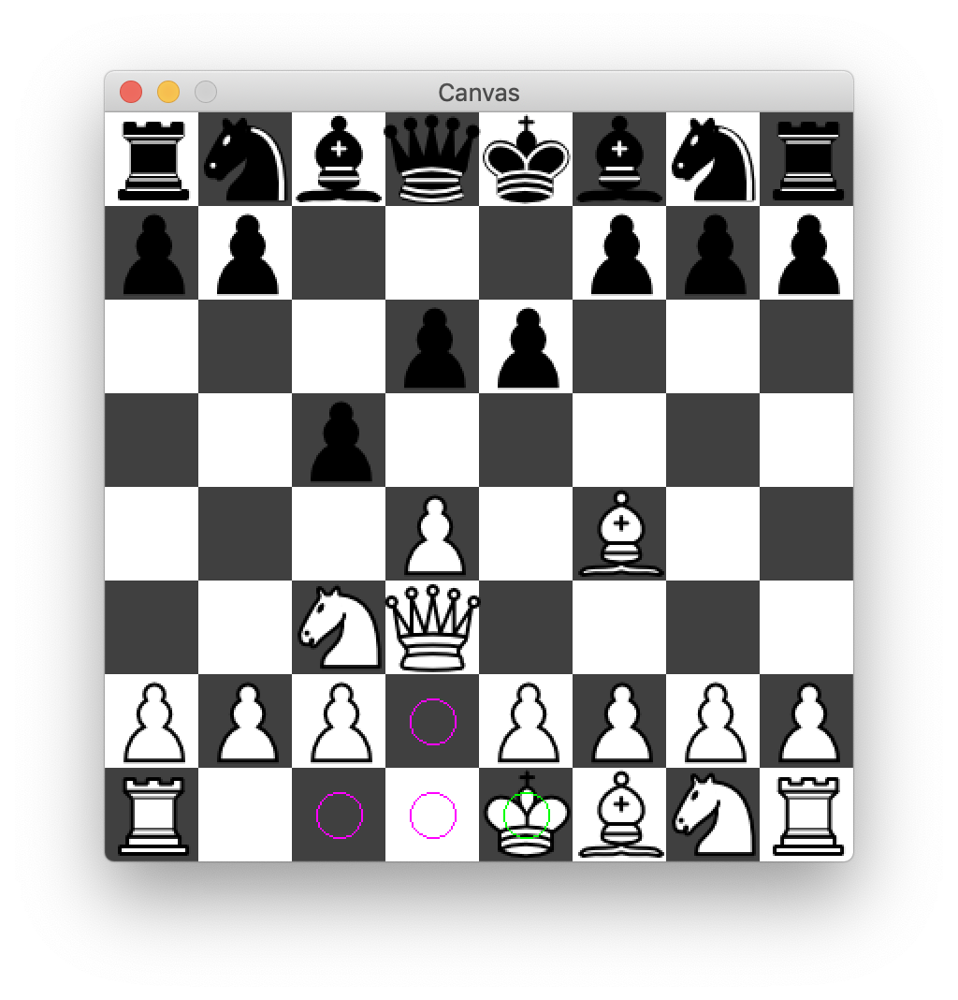
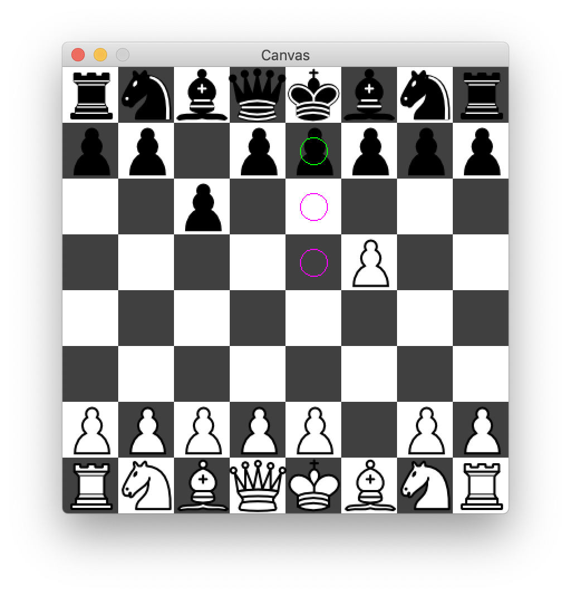

Assignment 20: Chess
Goals: Design a complex game with an AI
You should submit one .zip file containing the solution to this problem.
Be sure to properly test your code and write purpose statements for your methods. A lack of tests and documentation will result in a lower grade! Remember that testing requires you to make some examples of data in an examples class.
It is up to you which big-bang library to use, either the function or imperative one. Read the documentation carefully for more information.
Chess
You are going to design a 2-player, 1-player, or 0-player Chess game (with the missing player(s) being computer(s)).
In Chess, there are two players who alternate turns. Each controls 16 pieces with various properties on an 8x8 grid, with the goal being to defeat the other player by trapping their king, a type of piece (more explained below). One player’s pieces are white, and the other player’s pieces are black. The grid is checkered black and white, with the bottom-left tile being black.
As is common terminology, the player who controls the white pieces is just referred to as "white" and the player who controls the black pieces is just referred to as "black." So when you read something like "white can move their queen forward," that really means "the player who controls the white pieces can move their queen forward."
There are two main actions which drive the game, which is moving your own pieces and capturing the other player’s pieces. Moving a piece is self-explanatory. Capturing a piece means moving your piece onto another player’s, which then eliminates that piece. In every turn, you can perform one action. Other, special actions will be outlined below.
Note that one can never move into or through a space their own piece is occupying. A player also cannot move past another piece’s, it can either capture it or stop short of that other piece’s position. The one exception to these rules is that a knight can move through other pieces, which will be outlined further below.
20.1 The Rules of Chess
20.1.1 Setup
Every game of chess starts the same way. The bottommost row consists of the following pieces in order: rook, knight, bishop, queen, king, bishop, knight, rook. The next row consists of eight pawns. In the 3-d version, each player has this in front of them. In a 2-d version, which gives the top-down perspective of the board, it looks like this:
From there, players alternate moving their pieces, with white moving first. Every piece has unique movement properties.
20.1.2 Pieces in chess
20.1.2.1 Pawns


Movement
Pawns can only move in one direction: forward. Most of the time, pawns can only move forward one space, as pictured below.
However, when pawns are on their starting line, they may move either one or two spaces forward. After they leave the starting line, they can only move one space.
Capturing
Pawns are unique in that they are the only pieces in the game that have different rules for how they can move and how they can capture. Pawns cannot capture pieces directly in front of them. However, they can capture pieces directly in front of and to the left or right of them. For example, notice how in the following picture, the pawn does not have the option to capture the piece in front of it, but does have the option to capture the piece to its immediate forward diagonal.
In another example, this pawn can capture diagonally or move forward without capturing.
Here is what the game would look like if it did choose to capture that piece. Remember, capturing an enemy’s piece means moving yours into the space that the other piece occupied, clearing it from the board.
20.1.2.2 Queens, Bishops, and Rooks
Queens


Bishops


Rooks


Queens, bishops, and rooks all have similar movement and capture rules. Queens can move in all 8 directions, bishops can move along either diagonal in either direction, and rooks can move forwards and backwards or side to side. Note that the queen’s flexibility makes her the single most valuable piece in the game.
Some examples of possible actions are given below:
20.1.2.3 Knights


Knights have unique move rules. You can think of them as moving in an "L" shape: two up or down, then one to the left or right, or two left or right, then one up or down.
While knights cannot land on tiles if that tile already occupies a piece of their own color, they can make their "L" move or capture even if other pieces are "in the way." In other words, you can think of knights as pieces that "teleport," as opposed to moving across the board, like pawns (from their starting row), queens, bishops, and rooks do.
20.1.2.4 Kings


Kings can move in all eight directions much like queens can, however, the king can only move one space.
Note, however, that kings cannot move into a position that would endanger them.
A king being in danger is called...
20.1.3 Check
When a king is in danger, that is, is in a position where it could be diretly captured by an enemy’s piece, that king is "in check." For example, black is in check here:
When in check, a player may not make any move unless it would get them out of check. For example, black’s pawns cannot make any moves right now:
Additionally, the queen is only allowed to make the following move, because moving diagonally would not get the player out of check.
Note that there are three ways to get out of check: moving the king to a safe position, eliminating the piece it is threatened by, or by blocking the threatening piece’s line of attack (this last possibility only applies when the king is threatened by a queen, bishop, or rook from a distance).
It is illegal for a player to put themselves in check. Here, white cannot move the king forward, as it would put white in check:
20.1.4 Checkmate
"White is about to be in checkmate" is the same as saying "black is about to checkmate white." In other words, it is used as both a noun and a verb.
The game is over when one player checkmates another. A player is in checkmate when they are in check and no move can get them out of check. Here, white is in checkmate and has just lost the game:
20.1.5 Special Moves
20.1.5.1 Promotion
If a pawn manages to make it all the way across the board to the other player’s starting backline, it is then "promoted," or in other words, swapped out for a better piece. For example, below is a pawn which is about to move to the opposite end and be promoted to a queen:
This can also happen when a pawn captures a piece in the last row:

Technically speaking, in formal chess, players can promote a pawn to a knight, bishop, rook, or queen, but promoting to anything but a queen is almost never done. As such, you don’t have to allow for this scenario.
20.1.5.2 Castling
Under very specific conditions, a player can "castle." It is the only move in chess where a player moves two of their own pieces. In a castle, the king moves over two spaces to either the left or right, and the rook in that direction is placed one position behind the king in the opposite direction. Below are two examples of a castle (the former is called a queenside castle, the latter a kingside castle).

The player’s king has never moved.
The rook involved in the castling has never moved.
There are no pieces in between the king and the rook.
The spaces the king moves through are not under threat from an enemy piece.
The player is not in check.
Note that the last rule means a player cannot use a castle to get out of check.
20.1.5.3 En Passant
En passant, which is French for "in passing," is the last kind of special move in chess and can only happen under extremely specific conditions. Say that black’s pawn has just moved two spaces off its starting row:

And white happens to have a pawn adjacent to black’s just-moved pawn. It can then move to the diagonal to capture the pawn adjacent to it:
Note that this can happen only with pawns and only immediately after the pawn being captured has moved two spaces off its starting row. After that turn, one can no longer perform an en passant.
20.2 Visuals and Player Interaction
Player interaction is fairly simple. If it is white’s turn, for example, clicking on anything but a white piece should do nothing. If the player clicks on a white piece, that piece should be somehow highlighted (in my implementation, with a green circle), and all of the possible moves it can make should be shown (in my implementation, with a purple circle).
Once the possible moves are shown, clicking anywhere other than a possible move should do nothing. If a player clicks on one of the possible moves, the move should happen and it should then be the other player’s turn (unless checkmate has been accomplished and the game is over).
Should a player click on a piece but then change their mind before they move, they should press the escape button on their keyboard to de-select the piece. Once a player moves, it cannot be taken back.
20.3 Design hints
While the visual components and player interactions are fairly simple, the logic involved in programming a chess game means this will be by far the most complex program you have ever written for CS1 or CS2. As such, extreme care is needed in designing the game.
Major components of the game to keep in mind will shortly, follow, but as a general rule, you should make a new file for each class. This is industry-standard practice, and will keep your file sizes mangeable. For reference, my implementation is around 1500 lines, and you do not want to deal with files of code that are 1500 lines long.
The major components of this game are: the game itself (your class which extends World), the players, the board, which consists of pieces, and the actions players can take. Each of these are discussed below.
20.3.1 The game itself
The game class itself should be relatively simple, as the heavy lifting should be delegated to other classes. You may even consider writing another class that is solely responsible for drawing the game!
The game itself has to have at least two players (the player whose turn it currently is and the other player), the current state of the board, and which piece (if any) is currently selected.
20.3.2 Players
For now, players should just have a name and color. This will become more complex once we introduce AI’s into the game.
20.3.3 The board
The board should contain every piece and its position. Since the board knows about every piece, this class is a good place for methods like "would this move put a player in check?"
20.3.4 Pieces
Pieces and their moves are the heart of the game. All pieces have a color and position, and must be able to produce a list of the actions they can make given the current state of the game (more on actions below).
You should certainly have an abstract Piece class which contains all of the common behavior between classes, as well as a class for each kind of piece, but there are also subcategories of pieces which share common functionality. As such, a hierarchy of piece classes is appropriate. While some of these overlaps are obvious, some are less so (a King’s movement and Knight’s movement actually operate very similarly).
20.3.5 Actions
As outlined above, there are five types of actions in a chess game: moving, capturing, promotions, castling, and en passant. As capturing and promotions can happen at the same time, you might also consider that a separate, sixth type of action. Given this, you should definitely have an Action interface or abstract class, and one class for each type of move.
Every piece, given the current state of the board, should be able to produce a list of the actions it can take. I recommend making an abstract method along the lines of abstract List<Capture> getCaptures(Board currentState) in the Piece class, which will return all of the captures a given piece can make given the current state of the board, as well as an equivalent method for all other types of moves. Then, all of the Piece’s moves can be compiled into one large list in the Piece class itself.
20.3.5.1 Actions as Functions
An action can effectively be considered a function on a board. Given the current state, what state would be produced if this action were taken? While an action doesn’t necessarily have to implement the function interface, being able to use it as one will make your life much easier.
I strongly recommend making your board changes functional. That is, producing a new board should not modify the current board at all. While this will be very important once we incorporate AI, even without AI, it will enabling logic along the lines of "would this move put the player in check" much more straightforward.
20.4 Testing
If your game ever behaves unexpectedly, in such a large program, it is going to be very diffiuclt to figure out exactly why by just looking at the code. As such, being able to test the logic of your game is going to be very important. I recommend using the builder pattern (which we will discuss in class) to be able to quickly build scenarios that test the basic logic of all your pieces’ actions. By "scenario," I mean a board populated with only a few pieces that lets you focus on exactly the scenario you want to test.
20.5 AI
After completing a human-vs-human implementation of chess (huzzah!), it is time to create human-vs-computer, computer-vs-human, and even computer-vs-computer implementations of chess. To do this, the first things that must change are...
20.5.1 Players, but make it cyborg
A player must now have more than just a name or color, and because very different kinds of behavior must be supported by the same player fields in your world class, you should now make Player an interface, with both human and non-human implementing classes. To launch a different kind of game, one should only have to pass in different kinds of Players to your game’s constructor. You should still have a blank constructor, which by default launches a human-vs-computer game.
As computer-controlled players must now be able to move automatically, you can add a boolean canMoveAutomatically() method to your interface, and another method which, given the current board state, produces a desired action. For human-controlled players, you can throw an UnsupportedOperationException in the latter method. Alternatively, you can add one method to your interface which returns an optional action, with humans returning an empty optional.
20.5.1.1 onTick
To enable some players to move automatically, you should add an onTick method to your World. Computer-controlled players will make their moves from within the onTick method. Remember to pass in a non-zero tick-rate to bigBang so the onTick method is called. Also, keep in mind that automatically does not mean quickly; some AIs will take longer to move than others.
20.5.1.2 A randumb AI
Before implementing a smart AI, you should implement a randumb AI to determine if your infrastructure for human-vs-computer, computer-vs-human, and computer-vs-computer games are functional. A randumb AI is an AI which randomly selects an action from all possible actions.